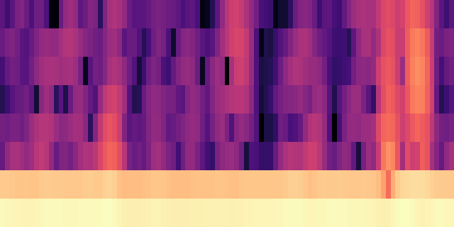
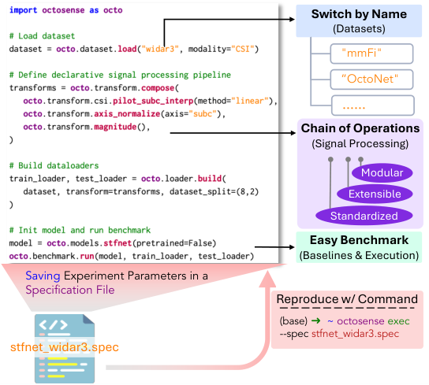

By position
y = STFT(x, axis=0)

bin=Same spectrum
0time
Research paper · 2026
The University of Hong Kong
A shared interface for wireless datasets, signal processing, and reproducible wireless sensing.
Wireless sensing has plenty of data.
Working across it is another story.
How can we use multiple datasets without debugging a separate loader for each one?
How can we reuse it with a different dataset or setup?
How should I organize signals, metadata, and labels so others can use them?

y = STFT(x, axis=0)

biny = STFT(x, axis="time")
 bin
binInitially both methods select time. After the cube rolls, position zero selects subcarrier, while the named operation still selects time.
Three Wi-Fi datasets. Shared signal processing. A library of models.
process = T.compose([
T.AxisNormalize(
"time", method="l2",
epsilon=1e-8),
T.Magnitude(),
AutoAlign(
model.get_input_contract(),
time_axis="time",
flatten_axes=(
"subc", "tx", "rx"),
),
])Sequence example · each model declares its input contract.
Capture dataset selection, splits, processing, models, and runtime settings in one experiment specification.